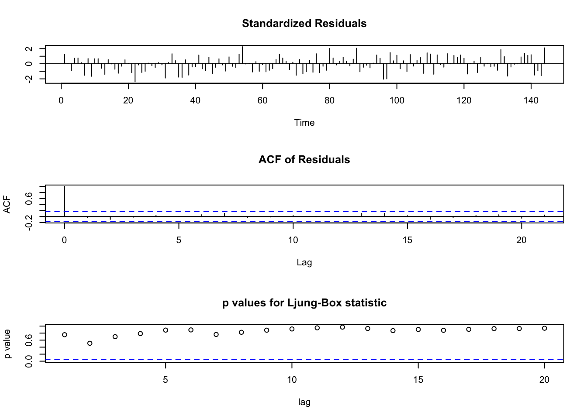

4 ARIMA/SARIMAモデル
4.1 ARIMA\((p,d,q)\)モデルとは
- \(Y_t:=(1-B)^d X_t\)が, causal ARMA\((p,q)\)となる確率過程\(X_t\) (\(d\)は非負整数), すなわち,
\[ \phi(B)Y_t = \theta(B) Z_t \tag{2}\]
- Backward shift operator \(B\)
- AR多項式 \(\phi(z)=1 - \phi_1 z - \cdots - \phi_p z^p\)
- MA多項式 \(\theta(z)=1 + \theta_1 z + \cdots + \theta_q z^q\)
4.2 SARIMA\((p,d,q)\times (P,D,Q)_s\)モデル (周期\(s\))とは
- \(Y_t:=(1-B)^d (1-B^s)^D X_t\)が, 以下で定義されるcausal ARMAとなる確率過程\(X_t\) (\(d,D\)は非負整数)
\[ \phi(B)\Phi(B^s) Y_t = \theta(B) \Theta(B^s) Z_t \tag{2}\]
- Backward shift operator \(B\)
- AR多項式 \(\phi(z)=1 - \phi_1 z - \cdots - \phi_p z^p\)
- MA多項式 \(\theta(z)=1 + \theta_1 z + \cdots + \theta_q z^q\)
- SAR多項式 \(\Phi(z)=1 - \Phi_1 z - \cdots - \Phi_p z^P\)
- SMA多項式 \(\Theta(z)=1 + \Theta_1 z + \cdots + \Theta_q z^Q\)
4.3 SARIMAモデルのパス生成: パッケージsarimaの利用
- “SAR(1)”モデル (s=12)
## Loading required package: stats4##
## Attaching package: 'sarima'## The following object is masked from 'package:stats':
##
## spectrum#par(mfrow = c(3,1))
seed_val <- 10
tlen <- 144
set.seed(seed_val)
#x <- sim_sarima(n = tlen, model = list(ar = c(rep(0,11), 0.8))) # 12 seasons
x <- sim_sarima(n = tlen, model = list(sar = 0.8, nseasons = 12, sigma2 = 1)) # 12 seasons
ts.plot(x, type = "l") # 時系列プロット- “SMA(1)”モデル
set.seed(seed_val)
#x <- sim_sarima(n = tlen, model = list(ma = c(rep(0,11), 0.8))) # 12 seasons
x <- sim_sarima(n = tlen,model = list(sma = 0.8, nseasons = 12, sigma2 = 1)) # 12 seasons
ts.plot(x, type = "l") # 時系列プロット- I(1) モデル (“Random Walk”)
set.seed(seed_val)
x <- sim_sarima(n = tlen, model = list(iorder = 1, sigma2 = 1)) # (1-B)X_t = e_t (random walk)
ts.plot(x, type="l") # 時系列プロット
- SARIMA\((0,0,0) \times (0,1,0)_{12}\)
set.seed(seed_val)
x <- sim_sarima(n = tlen, model = list(siorder = 1,nseasons = 12, sigma2 = 1)) # (1-B)^{12} X_t = e_t
ts.plot(x, type="l") # 時系列プロット- SARIMA\((0,1,0) \times (0,1,0)_{12}\)
set.seed(seed_val)
x <- sim_sarima(n = tlen, model = list(iorder = 1, siorder = 1, nseasons = 12, sigma2 = 1))
ts.plot(x, type = "l") # 時系列プロット- SARIMA\((0,1,0) \times (0,1,0)_{12}\)に, 初期値xを指定したシミュレーション
x <- sim_sarima(n = tlen, model = list(iorder = 1, siorder = 1, nseasons = 12, sigma2 = 1), x = list(init=AirPassengers[1:13]))
ts.plot(x, type = "l") # 時系列プロット- SARIMA\((0,0,0) \times (1,0,1)_{12}\)
set.seed(seed_val)
x <- sim_sarima(n = tlen, model = list(sar = 0.4, sma = 0.5, iorder = 0, siorder = 0, nseasons = 12))
ts.plot(x, type = "l") # 時系列プロット- SARIMA\((0,0,1) \times (1,0,1)_{12}\)
set.seed(seed_val)
x <- sim_sarima(n = tlen, model = list(ma = 0.7, sar = 0.4, sma = 0.5, iorder = 0, siorder = 0, nseasons = 12))
ts.plot(x, type = "l") # 時系列プロット- SARIMA\((2,1,1) \times (1,1,1)_{12}\)
4.4 SARIMAモデルの推定・診断
- 関数
arima()は, SARIMAモデルの推定が可能 (一方, 関数arima.sim()はSARIMAモデルのパスを生成できない) - 仮に\((p,d,q)=(2,1,1), (P,D,Q)=(1,1,1), s=12\)を正しく選んだとすると,
##
## Call:
## arima(x = x, order = c(2, 1, 1), seasonal = list(order = c(1, 1, 1), period = 12))
##
## Coefficients:
## ar1 ar2 ma1 sar1 sma1
## 1.2462 -0.8486 0.3504 0.2220 1.0000
## s.e. 0.0589 0.0558 0.0842 0.0909 0.2598
##
## sigma^2 estimated as 0.7217: log likelihood = -183.18, aic = 378.35##
## Box-Ljung test
##
## data: x.fit$residuals
## X-squared = 12.586, df = 20, p-value = 0.8944※ ARIMAモデル指定の場合には, 定数項パラメータは推定されない (include.meanオプションは無視される)
パッケージforecastの利用
- モデルの自動選択・推定
- forecastの関数
auto.arima()は,seasonalオプションによりSARIMAモデルを推定可能 (デフォルトは,seasonal = T)
auto.arima()
- 一変量時系列データに対してARIMA/SARIMAモデルを適合し, 情報量基準(AIC, AICc, BICの一つ)の下で最良のARIMAモデルを返す
- 所与の次数の制約条件の下で, 全ての可能なモデルの中からサーチを実行
- パラメータのデフォルト値:
- max.p = 5 # pの最大値
- max.q = 5 # qの最大値
- max.P = 2 # Pの最大値
- max.Q = 2 # Qの最大値
- max.order = 5 # p+q+P+Qの最大値
- max.d = 2 # dの最大値
- max.D = 1 # Dの最大値## Loading required package: forecast## Registered S3 method overwritten by 'quantmod':
## method from
## as.zoo.data.frame zoo## Series: x
## ARIMA(4,1,1) with drift
##
## Coefficients:
## ar1 ar2 ar3 ar4 ma1 drift
## 2.2193 -2.3467 1.3199 -0.4084 -0.7300 -3.0955
## s.e. 0.0898 0.1786 0.1721 0.0780 0.0598 0.4031
##
## sigma^2 = 14.72: log likelihood = -393.94
## AIC=801.88 AICc=802.71 BIC=822.62→ モデルは正しく推定はされてはいない. 定数項は大きな値
##
## Box-Ljung test
##
## data: x.fit3$residuals
## X-squared = 145.11, df = 20, p-value < 2.2e-16→ 季節性も残留
- 推定モデルを使った予測
4.5 データ分析例
データセット: bonds
bonds {expsmooth}
- 米国10年債利回り(年率) , 1994.1〜2004.5, 月次
- データ出所: Hyndman, R.J., Koehler, A.B., Ord, J.K., and Snyder, R.D., (2008). Forecasting with exponential smoothing: the state space approach, Springer.- コード出所 (一部改変): # Hyndman and Khandakar (JSS, 2008)
- https://www.jstatsoft.org/article/view/v027i03
季節性成分なしARIMAモデルを適合
# Seasonal成分なし
bnd_aafit <- auto.arima(bonds,
max.P = 0, max.Q = 0, D = 0,
approximation = FALSE)
bnd_aafit## Series: bonds
## ARIMA(0,1,1)
##
## Coefficients:
## ma1
## 0.322
## s.e. 0.090
##
## sigma^2 = 0.05675: log likelihood = 2.38
## AIC=-0.77 AICc=-0.67 BIC=4.88→ AICc基準 (デフォルト設定) の下で, 次のARIMA\((0,1,1)\)モデルを最良モデルとして選択. \[ X_t = Z_t + 0.322 Z_{t-1} \]
モデル残差のチェック
適合ARIMAモデルを使って予測
予測値 (点予測) は青線, および, 予測区間は青線を囲む色のついた領域 (デフォルトでは, 内側の濃い色の領域が信頼水準80%, 外側の薄い色が95%) で表示される. 予測の長さは, デフォルトでは, 周期があれば, その2倍, なければ (周期=1) 10 である.
適合結果および予測結果の要約
##
## Forecast method: ARIMA(0,1,1)
##
## Model Information:
## Series: bonds
## ARIMA(0,1,1)
##
## Coefficients:
## ma1
## 0.322
## s.e. 0.090
##
## sigma^2 = 0.05675: log likelihood = 2.38
## AIC=-0.77 AICc=-0.67 BIC=4.88
##
## Error measures:
## ME RMSE MAE MPE MAPE MASE
## Training set -0.006475772 0.2363103 0.1948763 -0.1916236 3.544951 0.2414321
## ACF1
## Training set -0.01876417
##
## Forecasts:
## Point Forecast Lo 80 Hi 80 Lo 95 Hi 95
## Jun 2004 4.761471 4.456175 5.066767 4.294561 5.228381
## Jul 2004 4.761471 4.255410 5.267532 3.987517 5.535425
## Aug 2004 4.761471 4.114176 5.408766 3.771519 5.751423
## Sep 2004 4.761471 3.998659 5.524283 3.594850 5.928092
## Oct 2004 4.761471 3.898468 5.624474 3.441621 6.081321
## Nov 2004 4.761471 3.808755 5.714187 3.304418 6.218524
## Dec 2004 4.761471 3.726793 5.796149 3.179067 6.343875
## Jan 2005 4.761471 3.650862 5.872080 3.062941 6.460001
## Feb 2005 4.761471 3.579801 5.943141 2.954263 6.568679
## Mar 2005 4.761471 3.512777 6.010165 2.851758 6.671184
## Apr 2005 4.761471 3.449172 6.073770 2.754483 6.768459
## May 2005 4.761471 3.388510 6.134432 2.661709 6.861233
## Jun 2005 4.761471 3.330418 6.192524 2.572864 6.950078
## Jul 2005 4.761471 3.274593 6.248349 2.487488 7.035454
## Aug 2005 4.761471 3.220790 6.302152 2.405203 7.117739
## Sep 2005 4.761471 3.168803 6.354139 2.325696 7.197246
## Oct 2005 4.761471 3.118461 6.404481 2.248704 7.274238
## Nov 2005 4.761471 3.069616 6.453326 2.174001 7.348941
## Dec 2005 4.761471 3.022141 6.500801 2.101396 7.421546
## Jan 2006 4.761471 2.975929 6.547013 2.030720 7.492222
## Feb 2006 4.761471 2.930883 6.592059 1.961828 7.561114
## Mar 2006 4.761471 2.886919 6.636023 1.894592 7.628350
## Apr 2006 4.761471 2.843963 6.678979 1.828896 7.694046
## May 2006 4.761471 2.801948 6.720994 1.764640 7.758302データセット: AirPassengers
(デフォルトの制約条件下) SARIMAモデルを選択・適合
## Series: ap
## ARIMA(2,1,1)(0,1,0)[12]
##
## Coefficients:
## ar1 ar2 ma1
## 0.5960 0.2143 -0.9819
## s.e. 0.0888 0.0880 0.0292
##
## sigma^2 = 132.3: log likelihood = -504.92
## AIC=1017.85 AICc=1018.17 BIC=1029.35→ AICc基準 (デフォルト設定) の下で, 次のARIMA\((2,1,1)(0,1,0)_{12}\) モデルを最良モデルとして選択. \[ (1 - 0.5960 \phi_1 - 0.2143 \phi_2) (1 - B) (1 - B^{12}) X_t = Z_t - 0.9819 Z_{t-1} \]
モデル残差のチェック
適合SARIMAモデルを使って予測
24ヶ月先 (デフォルト設定により, 周期\(s=12 \times 2\)倍) まで 予測を行っている. 先の米国債利回りデータと比べても, 予測区間が非常に狭い.
適合結果および予測結果の要約
##
## Forecast method: ARIMA(2,1,1)(0,1,0)[12]
##
## Model Information:
## Series: ap
## ARIMA(2,1,1)(0,1,0)[12]
##
## Coefficients:
## ar1 ar2 ma1
## 0.5960 0.2143 -0.9819
## s.e. 0.0888 0.0880 0.0292
##
## sigma^2 = 132.3: log likelihood = -504.92
## AIC=1017.85 AICc=1018.17 BIC=1029.35
##
## Error measures:
## ME RMSE MAE MPE MAPE MASE
## Training set 1.342306 10.84619 7.867539 0.4206996 2.800458 0.245628
## ACF1
## Training set -0.001248451
##
## Forecasts:
## Point Forecast Lo 80 Hi 80 Lo 95 Hi 95
## Jan 1961 445.6349 430.8903 460.3794 423.0850 468.1847
## Feb 1961 420.3950 403.0907 437.6993 393.9303 446.8596
## Mar 1961 449.1983 429.7726 468.6240 419.4892 478.9074
## Apr 1961 491.8399 471.0269 512.6529 460.0092 523.6706
## May 1961 503.3944 481.5559 525.2330 469.9953 536.7936
## Jun 1961 566.8624 544.2637 589.4611 532.3007 601.4242
## Jul 1961 654.2601 631.0820 677.4383 618.8122 689.7081
## Aug 1961 638.5974 614.9704 662.2245 602.4629 674.7319
## Sep 1961 540.8837 516.9028 564.8646 504.2080 577.5593
## Oct 1961 494.1266 469.8624 518.3908 457.0177 531.2355
## Nov 1961 423.3327 398.8381 447.8272 385.8715 460.7939
## Dec 1961 465.5075 440.8228 490.1922 427.7555 503.2595
## Jan 1962 479.2908 448.9986 509.5830 432.9628 525.6187
## Feb 1962 454.1768 421.7183 486.6352 404.5359 503.8177
## Mar 1962 483.0869 448.7343 517.4395 430.5491 535.6247
## Apr 1962 525.8192 490.1122 561.5262 471.2101 580.4283
## May 1962 537.4506 500.6862 574.2150 481.2243 593.6769
## Jun 1962 600.9838 563.3924 638.5753 543.4927 658.4750
## Jul 1962 688.4369 650.1833 726.6905 629.9331 746.9408
## Aug 1962 672.8212 634.0292 711.6133 613.4939 732.1485
## Sep 1962 575.1474 535.9102 614.3845 515.1393 635.1555
## Oct 1962 528.4241 488.8131 568.0350 467.8443 589.0038
## Nov 1962 457.6589 417.7292 497.5885 396.5918 518.7259
## Dec 1962 499.8581 459.6529 540.0633 438.3695 561.34664.6 外生的トレンドがあるケース
以下のような引数を使って, 外生的トレンドを指定できる:
sim_sarima():xinterceptオプションarima(),auto.arima():xregオプション
set.seed(seed_val)
x <- sim_sarima(n = tlen, model = list(sma = 0.4, ma = 0.4, sar = 0.8, ar = 0.5,
nseasons = 12, sigma2 = 1), xintercept = (1:tlen) * 0.05)
ts.plot(x, type = "l") # 時系列プロット- モデル次数, 線形トレンドを正しく指定した場合の
arima()による適合
##
## Call:
## arima(x = x, order = c(1, 0, 1), seasonal = list(order = c(1, 0, 1), period = 12),
## xreg = 1:tlen)
##
## Coefficients:
## ar1 ma1 sar1 sma1 intercept 1:tlen
## 0.7606 0.1744 0.7531 0.6228 -5.2907 0.3521
## s.e. 0.0656 0.1134 0.0576 0.0957 3.0592 0.0310
##
## sigma^2 estimated as 0.9208: log likelihood = -211.59, aic = 437.19
##
## Box-Ljung test
##
## data: x.fit$residuals
## X-squared = 11.261, df = 20, p-value = 0.9392- 線形トレンドを正しく指定した場合の
auto.arima()による適合
## Series: x
## Regression with ARIMA(1,0,0) errors
##
## Coefficients:
## ar1 intercept xreg
## 0.8291 -8.3410 0.3737
## s.e. 0.0485 1.9888 0.0233
##
## sigma^2 = 4.862: log likelihood = -317.26
## AIC=642.53 AICc=642.81 BIC=654.41